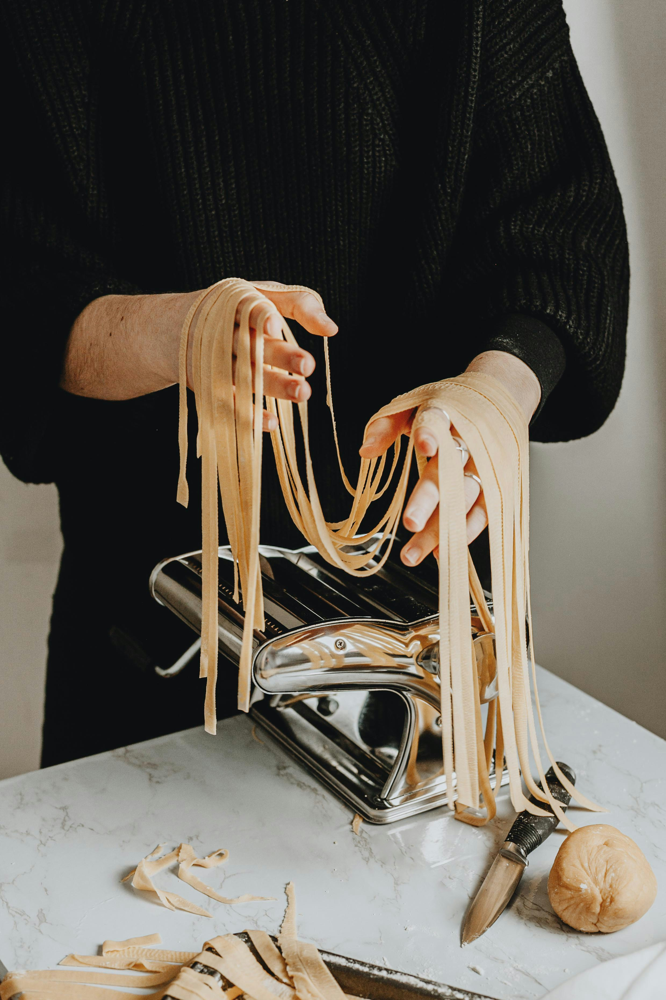

RESERVATIONS
Experience the taste of Italy at Dieci Piatti. Reserve your table now and dive into our exquisite pasta dishes made with love and tradition. From our homemade sauces to our fresh, locally-sourced ingredients, every bite is a testament to our dedication to authentic Italian cuisine. Don't miss out on the opportunity to savor the flavors that have been perfected over generations.